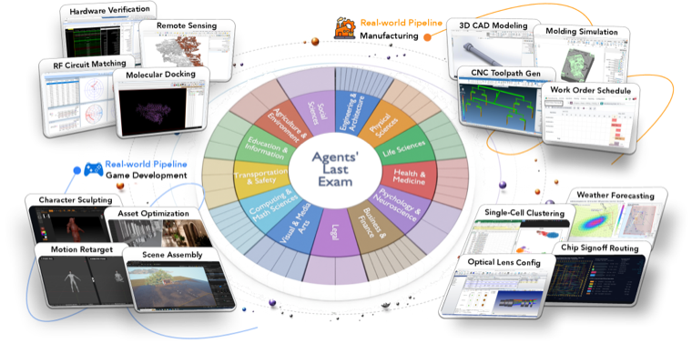
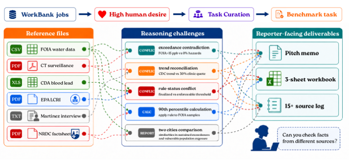
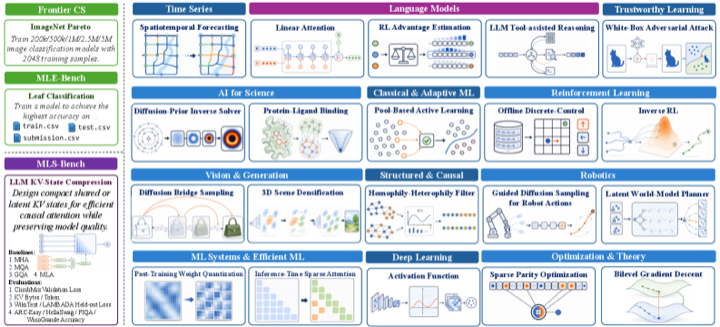
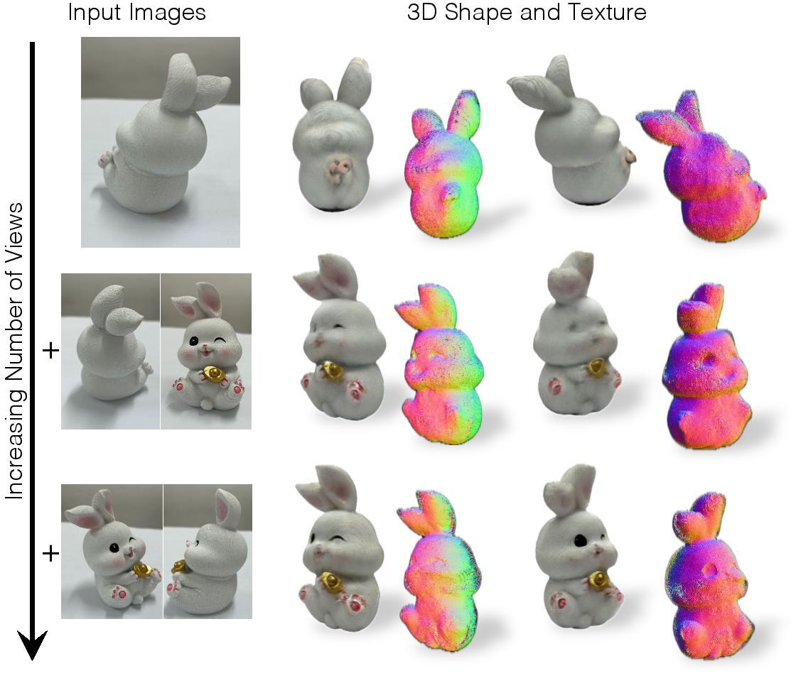
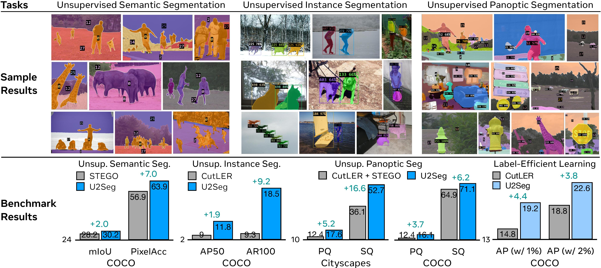
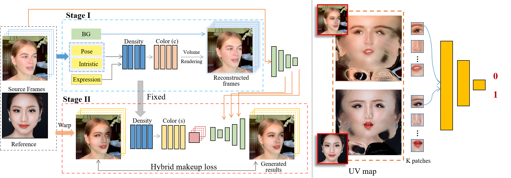

University of California, Berkeley
2024 – Present
Ph.D., Artificial Intelligence · AI Agent, AI Evaluation, Multimodal, AI for Health








* Equal contribution / core contributor · † Equal advising
Ph.D., Artificial Intelligence · AI Agent, AI Evaluation, Multimodal, AI for Health
B.E., Computer Science